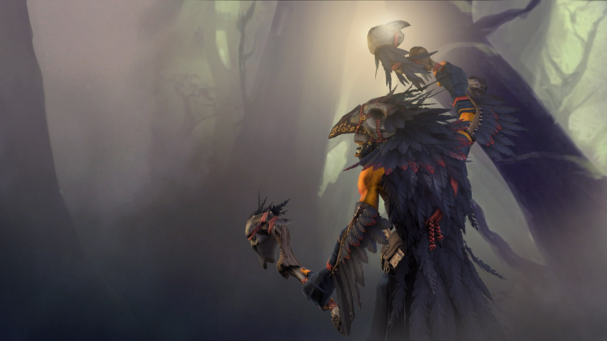

Dota 2
Juggernaut

urnero the Juggernaut, named after the martial tradition that he swore to preserve and protect, is the last of his masked kind who drowned beneath the waves that deluged the ancient Isle of Masks.
More details »
Dota 2
Dragon Knight

Davion is the Dragon Knight, a title that represents both his occupation and his dual nature.
More details »
Dota 2
Sven
Sven is a rogue knight, half-Meranth by birth.
More details »

Carry / Escape
Dota 2
Phantom Assassin
Among the Veiled Sisters, Mortred is but one of several Phantom Assassins
More details »
Dota 2
Night Stalker
Balanar, the Night Stalker, is an ancient night creature who survived the decimation of his kin on the First Day.
More details »
Juggernaut
"There's a fine line between bravery and stupidity."
Dragon Knight
"Live by the sword, die by the dragon."
Sven
"You should not have crossed me."
Phantom Assassin
"It is an honor to be chosen for death."
Night Stalker
"We were different as day and night."